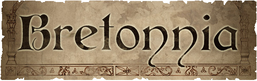

诸君同胞，
为了在我们心底永远深爱和守护着的人们！
为了我们对湖之女神最忠贞的信仰！
为了光明与荣耀的巴托尼亚！
拔出宝剑吧，举起你们的长枪。
巴托尼亚光荣的勇士们，
前进！！！
------巴托尼亚骑士决战之宣言。
使用长枪和剑，我们将击溃胆小的敌人。
在战锤的世界里，巴托尼亚骑士是可怕和值得尊敬的，勇猛和荣誉的战士。
他们异常的勇敢，守护着他们的土地，建立起一个理想的国家。 他们遵从湖之女神和国王的铁律，在战场上横扫敌军。没有人能抵挡住他们英勇的冲锋。

巴托尼亚给笔者的感觉，是一种童话般的美感。这是一个只有在童话和壮丽的奇幻史诗中，才会出现的王国。骑士与他们的侍从、国王与勤劳的农夫、探险与湖之女神的传说...这里每一个人身上都透露出淳朴与勇敢。人民有自己的信仰，骑士奉行着骑士精神的信条。荣誉与至善之心在这里高过一切。看那战场上一张张生动的面孔，这不仅仅是一堆漂亮的模型。每一个人物身后似乎都有一端故事。你会惊奇的发现，几乎每一名骑士的外表都不尽相同，或是衣着外貌与武器有明显的偏差，或是各自盾牌上有体现不同个性的纹章。在Warhammer战棋中这是独特的设定。下面，各位就在我的带领下，来探望一下这个梦幻般的国度。
骑士精神！
一位巴托尼亚玩家曾激动地表白：“我不在乎每次比赛与对战的输赢，我的每一役都要体现出巴托尼亚的美德与荣誉！”
GW公司似乎不单把这个种族设定成WH世界大战场中的一方势力，更赋予了他深刻的内涵。骑士们在冲锋前，可以向湖之女神祈祷，并获得女神的祝福从而获得神力加值，若敌方提出单挑，骑士也必须接受。否则将被视为背弃骑士准则。诸如类似的例子还有很多。将RP精神融入到战棋中，不能不说是一种创举。但是，这也不代表巴托尼亚这个国家战力不够强，他拥有全大陆最强的骑士团。骑兵在这个种族绝对是主力。因此，如何借助其他部队配合并指挥大量的骑兵冲锋、围灭敌人成为战术的重点。国家的荣誉感使得他们从不雇佣任何佣兵，巴托尼亚部队更偏重今战而非远射，也拥有不错的魔法。

下面是各个单位兵种与人物的简介。
武装民兵(Men-At-Arms)
实际上是巴托尼亚的农夫与平民，接受过基础的训练，平时在王国的土地上勤劳地耕作。一旦战斗打响，这些勇敢的人会迅速武装起来抵御来犯之敌。
另外，民兵可以因为附近有骑士单位而获得更高昂的士气和组织能力。

弓箭手（Peasant Bowmen）
巴托尼亚的远程攻击部队。前面按放的的是“拒马”，用以抵挡敌军的冲锋。
也具有民兵精神。

见习骑士（Mounted Yeomen）
还未正式受册封的轻骑兵。他们渴望通过考验成为正式的骑士。这是一群年轻气盛的青年，如果没有富有经验的指挥官来领导，很可能为显示他们的勇敢而做出有勇无谋的冲动行为。

王国骑士团（Knights of the Realm）
经过国王正式册封的骑士，巴托尼亚部队的主力。


探险骑士（Questing Knights）
全部是富有经验的老练骑士。他们经常外出探险并开拓王国的疆土，以及完成国王赋予的特殊任务。
（夜风：这个骑士团的模型各个都非常有特点，更像是外出冒险的骑士。）


投石机（BRETONNIAN TREBUCHET）
身型巨大威力十足的攻城武器，五名操作员的神态刻画得很逼真。

飞马骑士（Pegasus Knights）
骑乘着高大帅气的飞马，非常威风的骑士。（感觉比沙曼帝国的狮鹫骑士漂亮多了）也是巴托尼亚引以为傲的空军部队。